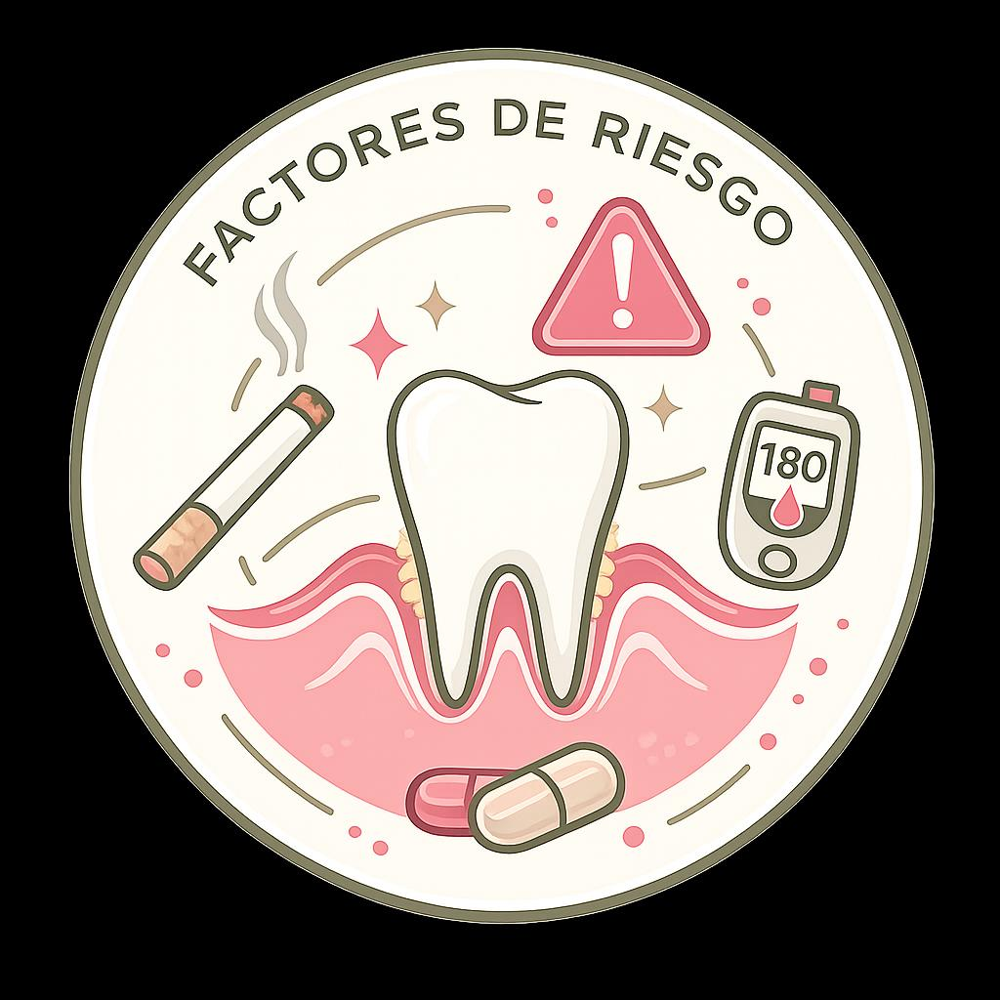

Tema 3
Factores de riesgo
Este contenido está en desarrollo — muy pronto encontrarás aquí información completa, clara y basada en evidencia sobre este tema.
Contenido en construcción
El equipo de Beyond the Smile está preparando el contenido de esta sección. Vuelve pronto para aprender todo sobre factores de riesgo.